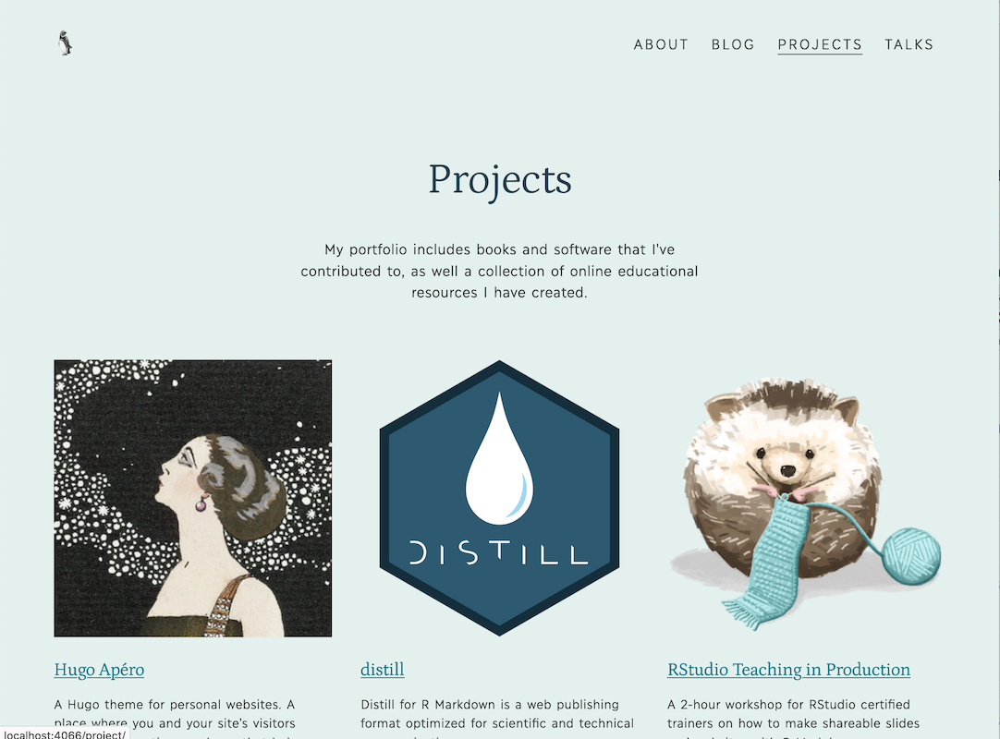
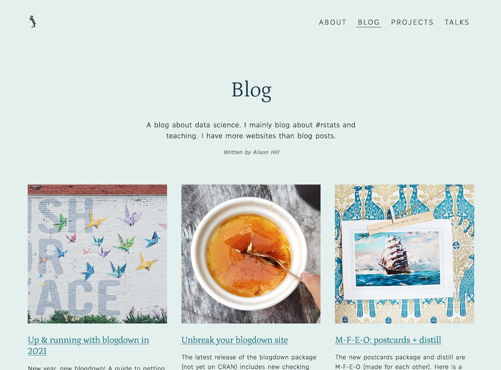

Get started > 05: Section configuration
05: Section configuration
Content sections can all be configured to showcase your blog, projects, and talks.
By Alison Hill
May 26, 2021
Hugo allows you to use a page’s front matter (written in yaml, toml, or json) to keep metadata attached to markdown files. The motto in Hugo is “everything is a page.”
There are two sets of front matter for each content section. One set is for the section itself (/blog/_index.md), and the other for each page within a section, which consist of front matter plus content (/blog/my-blog-post/index.md). Both sections (/blog/_index.md) and single pages (/blog/my-blog-post/index.md) are markdown files, but the _index filename tells you that is a section configuration file.
Apéro provides unique layouts for three main content sections:
- blogs (Ex: https://hugo-apero.netlify.app/blog/),
- projects (Ex: https://hugo-apero.netlify.app/project/), and
- talks (Ex: https://hugo-apero.netlify.app/talk/).
With a list-sidebar layout and thumbnails

With a list-grid layout and thumbnails

With a list layout and thumbnails

These are easy to see in your content folder structure and the structure of the urls for your site (note the folder names are singular, not plural):
content/
├── blog/ --> https://mydomain.io/blog/
├── project/ --> https://mydomain.io/project/
└── talk/ --> https://mydomain.io/talk/
The following page configuration options are found in the front matter of each content section of a Hugo Apéro site.
To learn more about section page templates, read the Hugo docs.
Lists of pages
Section pages are always lists. For most sections, there are three listing layout choices:
list(blogs, projects, talks)list-sidebar(blogs, projects, talks), orlist-grid(blogs and projects only).


We list each section pages with a title and excerpt plus a thumbnail, byline, and dateline according to your boolean choice here.
title: A Blog That Works
description: |
Words
go
here.
author: "Alison Hill"
show_post_thumbnail: true
thumbnail_left: true # for list-sidebar only
show_author_byline: true
show_post_date: true
# for listing page layout
layout: list-sidebar # list, list-sidebar, list-grid
Thumbnail images
Any of the list layouts can be used with thumbnails (show_post_thumbnail: true) or without thumbnails (show_post_thumbnail: false). They all look good, and work well on mobile!
If you show thumbnails, the image file in each page’s bundle with the word featured in the filename will be used as the page thumbnail in the list (like featured.jpg or even mario-kart-featured.png). The featured image will also be that page’s social sharing image.
content/
└── blog
├── _index.md
└── my-blog-post
├── my-featured.jpg <- your thumbnail!
└── index.md
If your image happens to be a hex shape (like an R package hex sticker), include the word hex in the filename too, like my-featured-hex.png.
content/
└── blog
├── _index.md
└── my-blog-post
├── my-featured-hex.jpg <- your thumbnail!
└── index.md
Page excerpts
Whether or not you use thumbnail images, an excerpt of each page’s content is shown on the listing page. The summary is configured inside each page’s file:
content/
└── blog
├── _index.md
└── my-blog-post
├── my-featured-hex.jpg
└── index.md <- the source file!
This theme looks for the YAML key in this order:
- Is there a YAML key named
excerpt? - If no
excerpt, is there a key namedsummary(if you used Hugo Academic previously, your excerpts may line up with this YAML key instead) - If no
excerptorsummaryfound, the first 70 words of your content will be used as the summary.
Read more about auto-generated content summaries in the Hugo docs.
List sidebar content
If you choose the list-sidebar layout for a section, you can configure the sidebar content in the same /section/_index.md file.
# for list-sidebar layout
sidebar:
title: A Sidebar for Your Thoughts
description: |
Sidebar
thoughts
go here.
author: "Alison Hill"
text_link_label: Subscribe via RSS
text_link_url: /index.xml
show_sidebar_adunit: true # show ad container
To display an image at the top of the sidebar, add an image file to the root of the content section and name the file sidebar-listing.
content/
└── blog
├── _index.md
└── sidebar-listing.png
Renaming sections
Say you want to use the project content section, but you want to name it portfolio instead. You have a few options!
Level 1: Rename the header
Your first option is to simply rename the link in your main menu in your config.toml file:
[menu]
[[menu.header]]
name = "Portfolio"
title = "My project portfolio"
url = "/project/"
weight = 1
This will change the text of the menu in the site header to the word “Portfolio”. However, the url for the content section has not changed and will still be */project/.
Level 2: Rename the url
Your next option is to actually change the url. You can use [permalinks] in your config.toml file:
# Permalinks
[permalinks]
portfolio = "/project/:filename/"
Here, :filename is a variable, minus the file extension. You could also use :title or :slug, for example. Read more about permalinks and variables in the
Hugo docs.
Changing permalinks will only change the url a visitor sees- not your underlying folder structure. The url for the content section will now be */portfolio/, so you would want to also update your menu:
[menu]
[[menu.header]]
name = "Portfolio"
title = "My project portfolio"
url = "/portfolio/"
weight = 1
Level 3: Rename your folder
Your last option is to change the actual name of the folder. This change is pretty disruptive, because by default Hugo applies the theme’s layout files based on inferring the content section from your directory structure.
content/
├── blog/ -> use blog layouts
├── project/ -> use project layouts
└── talk/ -> use talk layouts
If you rename project -> portfolio, Hugo won’t know the right layout file to use, and will use an Apéro default layout file, which is likely not what you want. Section is determined by a content’s location on disk and cannot be specified in the front matter. A content’s type is also determined by its location on disk but, unlike section, it can be specified in the front matter.
content/
├── blog/ -> use blog layouts
├── portfolio/ ??? apply default layout
└── talk/ -> use talk layouts
Read more about overriding destination paths via front matter in the Hugo docs.
If you rename a folder, you’ll need to tell Hugo where to find the right Apéro layout file. Do this by editing the section configuration file. In our example, this would be content/portfolio/_index.md and add this to your YAML:
type: project
cascade:
type: project
This tells Hugo to use the project layouts for this section, but also for all pages in this section too. Read more about cascading front matter in the
Hugo docs.
If you want your new section to show up in the “about” page, update the mainSections in your config.toml file too:
[params]
mainSections = ["blog", "portfolio", "talk"]
If you are curious how mainSections works, read about it in the
Hugo docs.
Reusing sections
The tricks shared above can also apply to adding sections. Say you want to have a project page using the project layout, but you also want a separate content section to showcase your books that uses the same project layout. The best way to do this is to use our
level 3 trick. Copy the exampleSite content for a section, then (for example):
-
Rename the folder
content/ ├── blog/ -> use blog layouts ├── project/ -> use project layouts └── book/ -> also use project layouts? -
Open up the
/book/_index.mdfile and add:type: project cascade: type: project -
Add your new section to your header menu (if you like, or to the footer):
[menu] [[menu.header]] name = "Blog" title = "My blog" url = "/blog/" weight = 1 [[menu.header]] name = "Projects" title = "My project portfolio" url = "/project/" weight = 2 [[menu.header]] name = "Books" title = "Books I have written" url = "/book/" weight = 3 -
If you want your new section to show up in the “about” page, update the
mainSectionsin yourconfig.tomlfile too:[params] mainSections = ["blog", "project", "book"]